Kuwana, Mie: things to do, food and stays
Kuwana · Mie
Kuwana
Highlighted on the Mie map.

Stay
ホテル花水木
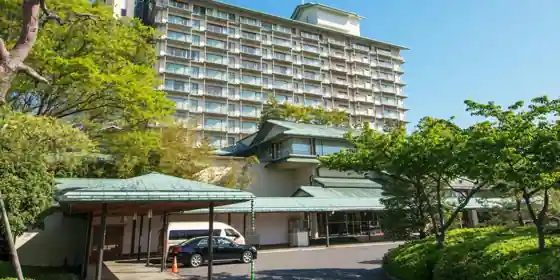
Hotel Kasui Ki
Hotel in Nagashima, Kuwana with kaiseki dinners.
ホテルルートイン桑名
Hotel Route Inn Kuwana
Hotel in Hoshikawa, Kuwana with parking.
MARUYO HOTEL
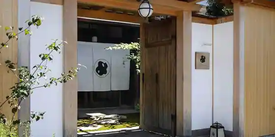
MARUYO HOTEL
Inn in Funeuma, Kuwana with one group per day.
ホテル多度温泉
Hotel Tado Onsen
Hotel at Hoteltado Onsen in Tado, Kuwana.
CASA WATARI KUWANA
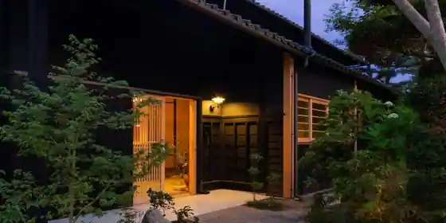
CASA WATARI KUWANA
Inn in Kuwana with a renovated traditional house.
セントラルホテル
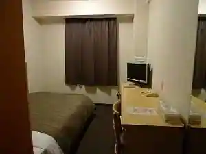
Sentoraru Hotel
ステーションホテル桑名
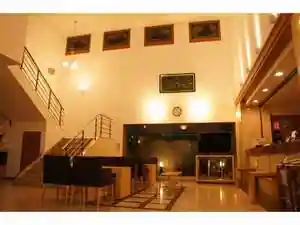
Station Hotel Kuwana
Hotel in Chuo, Kuwana with business travelers; 3-minute walk from Kuwana Station.
三交イン桑名駅前
Sanko Inn Kuwanaeki Mae
Inn in Hisashi, Kuwana; 2-minute drive from Kuwana Station.
桑名シティホテル
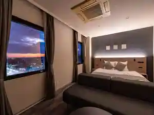
Kuwana City Hotel
くわなパークホテル
Kuwana Park Hotel
Hotel in Hisashi, Kuwana with business travelers; 3-minute walk from Kuwana Station.
桑名グリーンホテル
Kuwana Gurin Hotel
Hotel in Yuraku, Kuwana with parking; 1-minute walk from Kuwana Station.
スーパーホテル桑名駅前
Super Hotel Kuwanaeki Mae
Dining
日の出
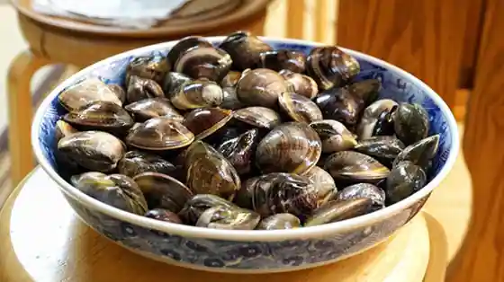
Hinode
江戸町 すぎもと
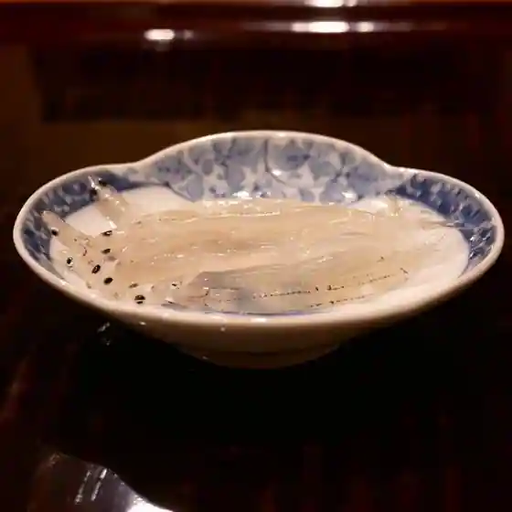
Edo Machi Sugimoto
蛤料理 うえむら
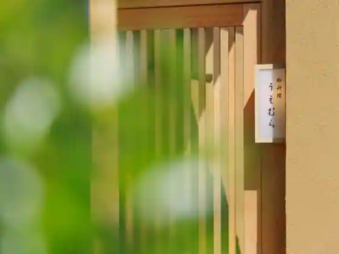
Hamaguri Ryori Uemura
センプレ
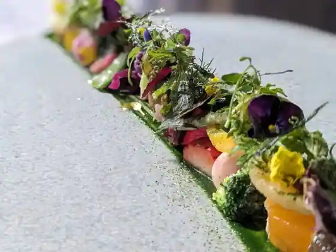
Senpure
焼肉 すっきゃねん
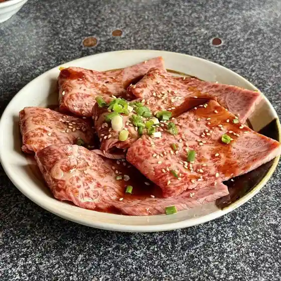
Yakiniku Sukkyanen
らぁめん登里勝
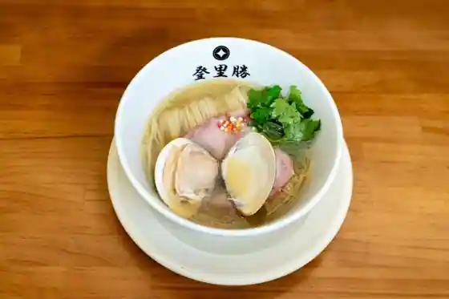
Ramen To Sato Kachi
柿安 料亭本店
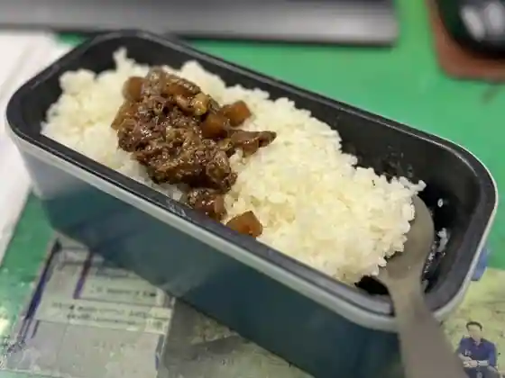
Kakiyasu Ryotei Hon
大和
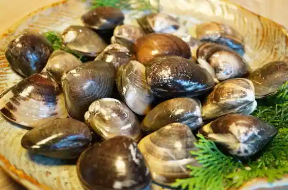
Yamato
魚重楼
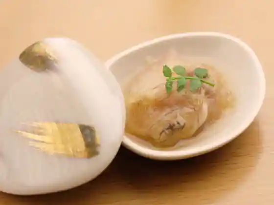
Uoshige Ro
玉寿司
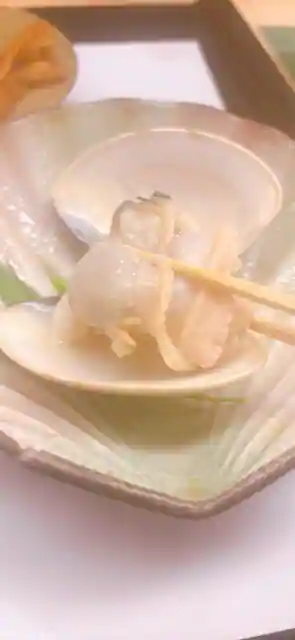
Tamazushi
美勝
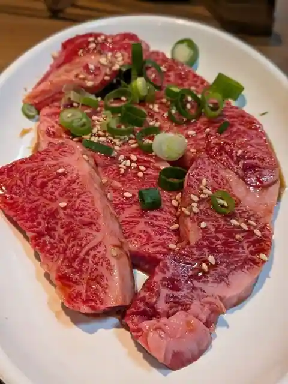
Yoshikatsu
三彩
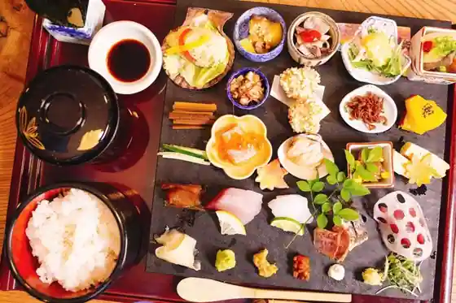
Sansai
川市
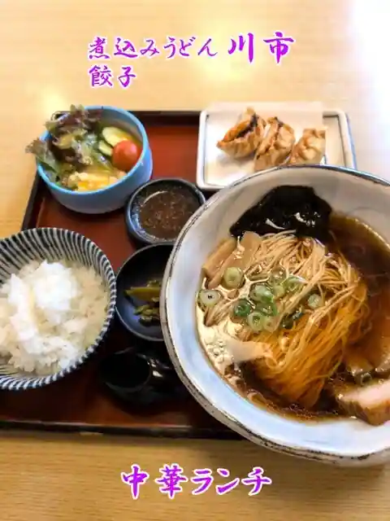
Kawa Shi
うなぎ料理 丑松
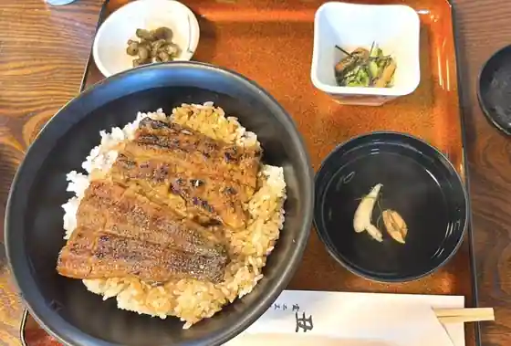
Unagi Ryori Ushimatsu
旬食健美 田しろ
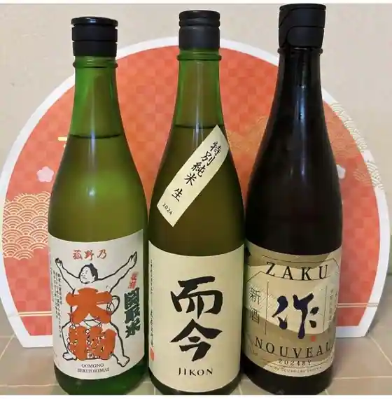
Jun Shoku Takemi Ta Shiro
すし道場 桑名店
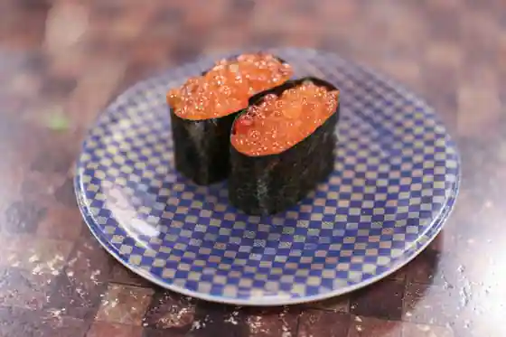
Sushi Dojo Kuwana
らぁめん香房 登里勝 長島店
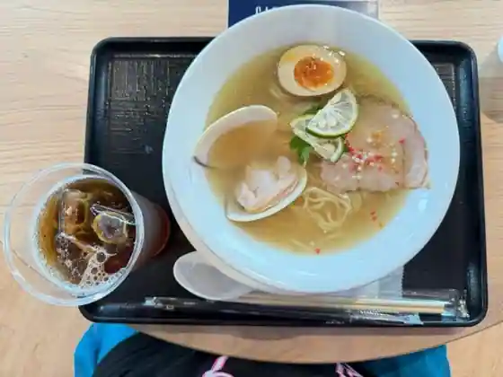
Ramen Kobo To Sato Kachi Nagashima
FRUITS SNOW
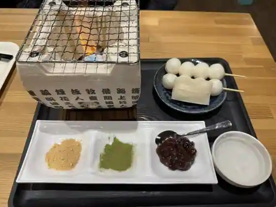
FRUITS SNOW
えびす亭
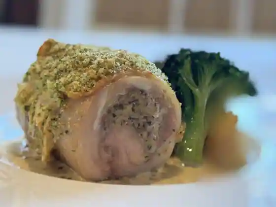
Ebisu Tei
川出拉麺店
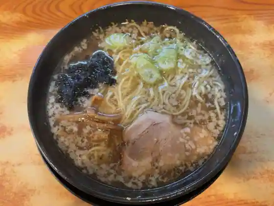
Kawade Ramen
ラーメン 天風 長島店
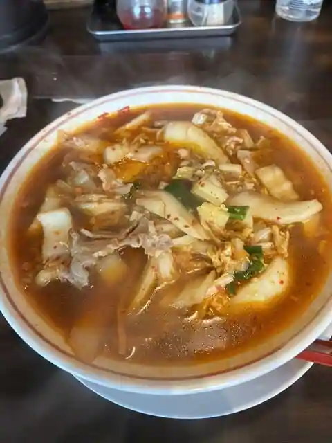
Ramen Tenpu Nagashima
よしむら屋
Yoshimura Ya
魚のてっぺん
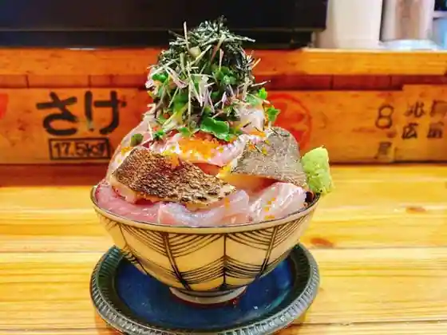
Sakana Noteppen
らぁ麺 すぎ本 ジャズドリーム長島店
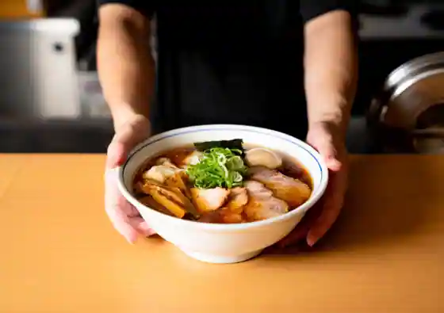
Ra Men Sugi Hon Jazudorimu Nagashima
Sights
ROSA FIFLD

Jonan Shrine
Kuwanabesu

Tado Kyo Tennen Puru

Nagashima Onsen (Yu Ami no Shima) Nagashima Spa "Yuami no Shima"

Nagashimasupa Land Nagashima Spaland
Nagashima Jambo Kaisui Puru
Kuwana Castle Ruins Kyuka Park
Hana Hiroba Nabana Village (Haru)
Sakura Namiki Nabana Village (Someiyoshi no)
Tado Taisha
Saikurusuteshon | Nagashima Farm
Nagashima Farm (Nippon De Yuiitsu Jurei 2000 Nen no Oriibu Taiju)
Tennen Onsen Kuahausu Nagashima
Ando Shokuhin Sanpuru Seisakusho
Nabana Village Begonia Garden
Hamaguri Plaza
BLUEGRASS Gorufukosu Nagashima
Nabana Village
Akasu Ga Jinmei Sha
Roku Hana En
Nagoya Anpanman Kodomo Museum & Park
Tama San Inari Shrine
Kangaku Tera
Joba Club Kurein Tokai
Shoju Tera
Shichiri no Watari Ato
Tado Guriin Farm
(Sato Baths) Nabana Village
Kuwana Sosha (Kasuga Shrine)
Daifuku Ta Tera
Kami Kan Shrine
Chinkoku Shukoku Shrine
Tado Yama
Mitsui Autoretto Park Jazudoriimu Nagashima
Masuda Shrine
Higashimeihan Jidoshado (Oyamada Parking Area) Kudari Sen
Token Tado Kantorii Club Nagoya
Kuwana Museum
Wangan Nagashima PA Ashiyu
Kakiyasu Komyunitei Park (Yoshiyuki Maru Komyunitei Park)
Tado Yamagami Park
Moroto Shi Garden
Ishidori Hall
Hojo Tera
Waju no Sato
Shogen Tera
Kaizo Tera
Kita Kuwana Soja (Kita Kuwana Shrine)
Bi Shika no Jinmei Sugi
Tado no Inunashi Jisei Chi
Tayu no Dai Kusu
Yada Tachiba
Moroto Suido Chosuichi Iko
Takatsuka Yama Burial Mound
Kako to Kuhi
Choen Tera
Sumiyoshi Ura
Kuroganemochi
Tenmu Tenno Sha
Shirauo Tsuka (Hama no Jizo)
Hama no Jizo (Ryufuku Tera)
Heguri Shrine
Kuwana Betsuin Hon to Tera
Moroto (Shu) Ie House Omoya Yoshitsu Goten Yokan Tama Totsu Ba Renga Kura Omotemon